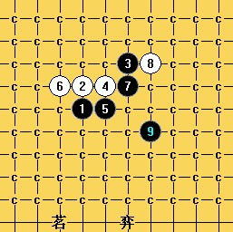

[互动棋谱]疏星终结
首页
茗弈阁
#1 [互动棋谱]疏星终结 作者：二十七刀 发表时间：2009-3-11 20:16:19
疏星终结之【茗弈】清洁工QQ(81361670) 疏星终结之茗弈清洁工.rar
疏星终结之茗弈清洁工.rar［本站用户 五子痴 于 2009-3-11 20:25:53 花5个金币送您鲜花一朵］
［ 逆刃 于 2009-3-11 20:30:13 时奖励此帖[金币加 20 威望加1］
［此帖子已被 茗弈小刀 在 2009-4-22 19:40:26 编辑过］
#2 Re:疏星终结 作者：wd1988 发表时间：2009-3-11 20:25:28
好帖一定要顶！感谢楼主！
#3 Re:疏星终结 作者：红豆 发表时间：2009-3-11 20:29:12
挺住
#4 Re:疏星终结 作者：飞哥 发表时间：2009-3-11 22:23:31
好像下载的谱不是这个变化吧？
#5 Re:疏星终结 作者：飞哥 发表时间：2009-3-11 22:24:30
我看错了，谢谢楼主！
#6 Re:疏星终结 作者：山寨手机 发表时间：2009-3-12 10:00:18
二十七刀 真是太强悍了！
#7 Re:疏星终结 作者：安娜制作所 发表时间：2009-3-12 11:10:05
挖,太利了!
#8 Re:疏星终结 作者：无心永恒 发表时间：2009-3-13 18:51:27
怎么谱没了。。
#9 Re:疏星终结 作者：明五 发表时间：2009-3-14 11:56:21
我是门外汉,特来学习。
#10 Re:疏星终结 作者：gerbo 发表时间：2009-3-15 2:50:49
 9手有瞧过,没想到真是神之一手啊..恭喜啦~~
9手有瞧过,没想到真是神之一手啊..恭喜啦~~
#11 Re:疏星终结 作者：刀魂 发表时间：2009-3-15 4:53:08
厉害。。。。
#12 Re:疏星终结 作者：香雪美景 发表时间：2009-3-15 14:23:28
谢谢!我要好好学习啦!